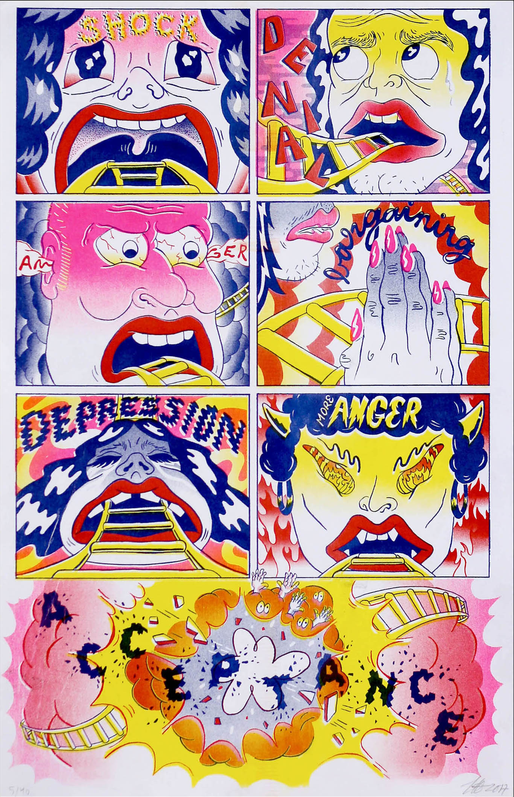
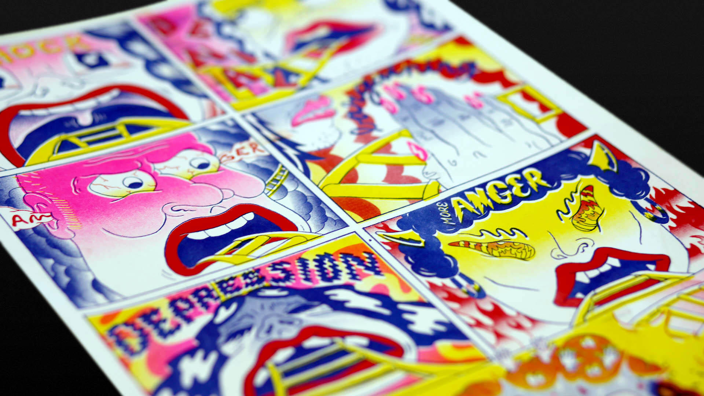
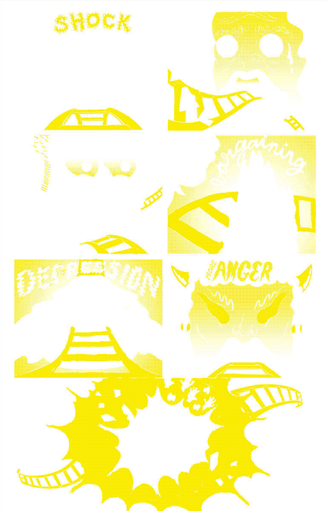
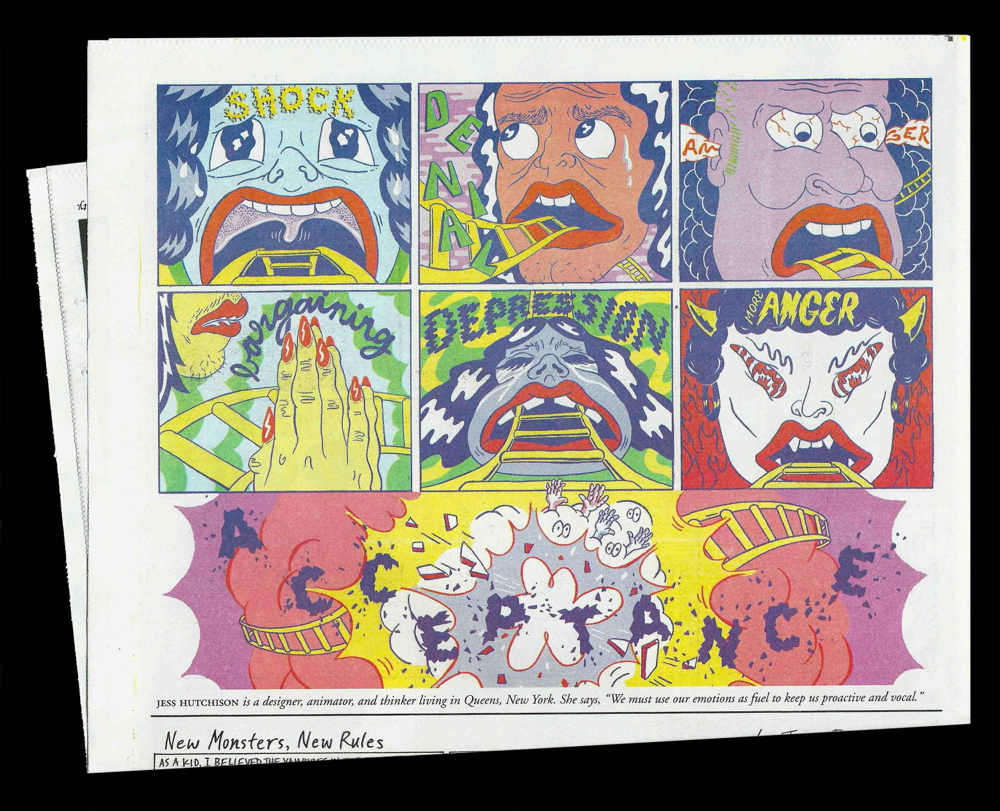

RESIST!
Acceptance
After the election, I saw charts illustrating the 5 Stages of Grief floating around the internet. Personally, I vacillated between all of the emotions listed, rather than experiencing a succession of feelings.



